Unfixed
GMP Type Confusion
Requirements:
PHP <= 5.6.40
Compiled
with: '--with-gmp', '--enable-sigchild'
Software: packages Symfony/process, symfony/routing <= 3.4.47
installed from Composer
Original
GMP Type confusion bug was found by taoguangchen researcher and
reported [1].
The
idea of exploit is to change zval structure [2] of GMP object during
deserialization process.
In
original exploit author says about changing zval type using this code
lines:
function __wakeup()
{
$this->ryat = 1;
}
 PHP supports serialization/deserialization of references. It is done using “R:” syntax. $this→ryat property is a reference to GMP object. Rewrite of $this→ryat property leads to rewrite of GMP zval.
There are many ways to rewrite zval in PHP, easies is code line like this:
PHP supports serialization/deserialization of references. It is done using “R:” syntax. $this→ryat property is a reference to GMP object. Rewrite of $this→ryat property leads to rewrite of GMP zval.
There are many ways to rewrite zval in PHP, easies is code line like this:
$this→a = $this→b;
Part
of exploit is to find this line in code of real web-application, and
execute it during deserialization process.
Bug
in GMP extension was “fixed” as part of delayed __wakeup patch.
But source code in gmp.c file was not patched. So bypassing delayed
__wakeup would result that this bug is still exploitable.
Delayed
__wakeup patch was introduced in PHP 5.6.30. Generally it was a patch
to prevent use-after-free bugs in unserialize. Exploits using
use-after-free bugs are based on removing zval’s from memory in the
middle of deserialization process and further reusing freed memory.
Introduced patch suspends execution of object’s __wakeup method
after deserialization process finishes. It prevents removing zval’s
from memory during deserialization process.
There
is another way to execute code in the middle of deserialization in
PHP.
In
PHP there exists Serializable interface [3] It is for classes that
implement custom serialization/deserialization methods.
Deserialization of these classes can not be delayed. They have
special syntax in unserialize starting with “C:”.
In
real web-apps “unserilaize” methods are small and don’t have
code lines to rewrite zval.
public
function unserialize($data) {
unserialize($data);
}
If
$data is invalid serialization string (bad format),
unserialize($data) call will not throw any fatal error.
Deserialization process will continue after unserializing
custom-serialized object. This can be used to trigger __destruct
method using unclosed brace in serialized $data string. Code of
__destruct method will be executed in the middle of unserialization
process! In code of __destruct method there is a big chance to find
code lines that rewrite zval. The only restriction for this trick is
to find a class in web-application code that implements Serializable
interface.
As
real-world example two packages from Symfony were taken:
symfony/process [4] and symfony/routing [5]. These packages are part
of Drupal/PHPBB3 and other projects. Packages are installed from
Composer manager [6].
Create
composer.json file:
$
cat composer.json
{
"require": {
"symfony/process": "v3.4.47",
"symfony/routing": "v3.4.47"
}
}
Run
composer installer:
$
composer install
Installer
creates vendor/ directory with PHP source files.
Search
for code line to rewrite zval:
$this->exitcode
= $this→processInformation['exitcode'];
This
line located in method
of class Process and very possible can
be reached from __destruct method.
Search
for class that implements Serializable
./routing/Route.php:class
Route implements \Serializable
It
has unserialize method with another unserialize function call.
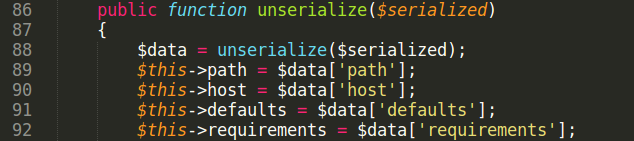
Let
us run exploit and understand how it works.
Set
two breakpoints in gdb. First, when GMP object is created.
gdb-peda$
b gmp.c:640
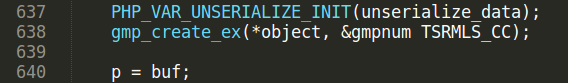
Another
breakpoint, where type confusion bug happens.
gdb-peda$
b gmp.c:661

Rub
gdb, unserialization of GMP object properties starts.
Stop
on line 640 and print object zval. It is GMP object with handle =
0x3

Set
breakpoint on unserialize call.
gdb-peda$
b var.c:967
Continue
execution.
Execution
reaches second unserialize function call, located in unserialize
method of Route class.
Because
of invalid serialization string (it hash “A” char instead
of closing bracket at the end), php_var_unserialize call
returns false and
zval_dtor(return_value) is called. If the zval_dtor argument has
object type, it’s __destruct method executes.

Output
return_value using printzv macros. It is object of Process
class with unserialized properties.
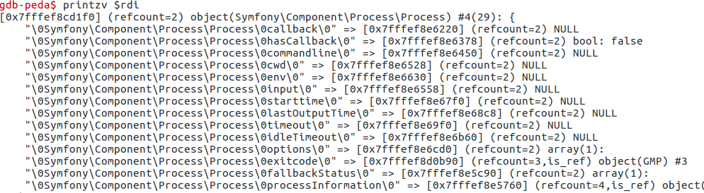
Start
POI chain from __destruct method of Process class:
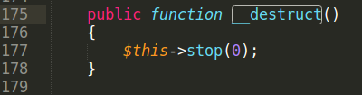
Code
line to rewrite zval is located in close() method.
$this->exitcode
= $this→processInformation['exitcode'];
Execution
reaches updateStatus method:
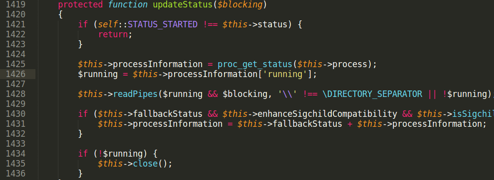
Another
problem is that proc_get_status returns false because $this→process
is not resource.
$this->processInformation
property is assigned to false. So we can’t set
$this->processInformation right in serialized string.
There
is some code after proc_get_status called:
if
($this->fallbackStatus &&
$this->enhanceSigchildCompatibility &&
$this->isSigchildEnabled()) {
$this->processInformation = $this->fallbackStatus +
$this->processInformation;
}
To
pass $this→isSigchildEnabled() condition PHP needs to be compiled
with “–enable-sigchild” option.
If
processInformation is false, addition of false and array gives Fatal
error and script stops. But we need to write into processInformation
by somehow.
In
PHP language, variable is deleted from memory, when it’s refcount
becomes 0. If a variable is an object, it’s __destructor method
executes. Look closer on this line:
$this->processInformation
= proc_get_status($this→process);
Rewrite
of processInformation property can lead to __destruct execution
because refcount becomes 0. We can use reference (R:) again to
rewrite processInformation in called __destruct method.
ProcessInformation needs to have an array type not to throw Fatal
error. There is another class in symfony/process that has empty array
assignment.
abstract
class AbstractPipes implements PipesInterface

Make
$this->pipes reference to $this→processInformation. They point
into same zval in memory.
When
$this→pipes is assigned an empty array,
then $this→processInformation too.
$this->fallbackStatus
is merged with $this->processInformation
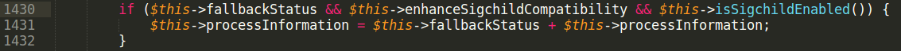
A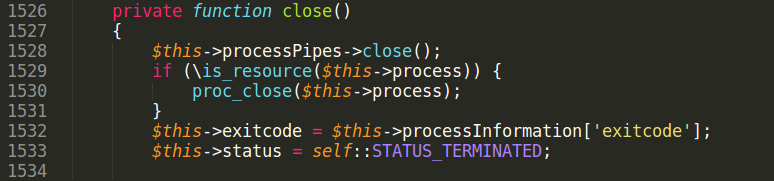
fter
that close() method executes where line of code to rewrite zval is
located.
$this->exitcode
is reference to GMP object in serialized string, writing into
$this->exitcode rewrites zval of GMP object. Value to write is
taken from $this→fallbackStatus[‘exitcode’]
and equal to i:1; in
exploit string.
Continue
execution.
See
what happened with GMP zval.
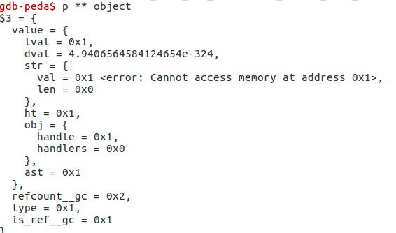
Handle
of GMP zval is equal to fallbackStatus[‘exitcode’]
it is 0x1.
See
what function zend_std_get_properties does.


Z_OBJ_HANDLE_P(zval_p) Z_OBJ_HANDLE(*zval_p)
#define
Z_OBJ_HANDLE(zval) Z_OBJVAL(zval).handle
#define
Z_OBJVAL(zval) (zval).value.obj
Z_OBJ_HANDLE_P(zval_p)
returns zval_p.value.obj.handle it is an object handle taken from
zval structure. Z_OBJ_P macro takes a object handle number, and
returns property hashtable of object with the given handle number.
zend_hash_copy copies props of GMP object into this hashtable.
Handle
number is fully controlled from exploit. Using this bug an attacker
can rewrite props of any object in PHP script.
What
object is good to rewrite properties?
Symfony
packages were installed using Composer. Composer has class
autoloading mechanism.
When
autoload.php script included, object ClassLoader registered by
spl_autoload_register as class autoload handler. When any new not
loaded class is used, autoload handler executes.

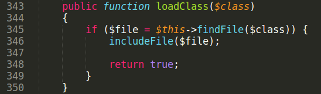
classMap
property stores a dictionary of classes and files for this classes to
be autoloaded. Rewrite classMap property of ClassLoader object
results into arbitrary file include.
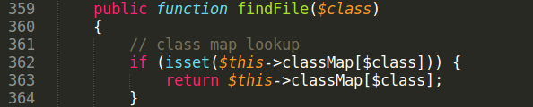
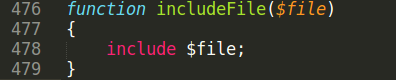
Many
applications include ‘autoload.php’ very first. ClassLoader
object will have handle = 0x1!
No
need to bruteforce handle. It makes exploit very stable.
To
write 0x1 into handle id no need to create integer zval, attacker can
use boolean type. PHP boolean type is represented in memory as 0 or 1
integer.
Code
lines like $this→prop = true are more common in real code than
property assignment demonstrated previously. Most
importantly, with boolean zval it is still possible to overwrite
Composer object. Usage of $this→prop=true is demonstrated in
another advisory.
References:
[1]
https://bugs.php.net/bug.php?id=70513
[2]
https://www.phpinternalsbook.com/php5/zvals/basic_structure.html
[3]
https://www.php.net/manual/en/class.serializable
[4]
http://packagist.org/packages/symfony/process
[5]
http://packagist.org/packages/symfony/routing
[6]
https://getcomposer.org/